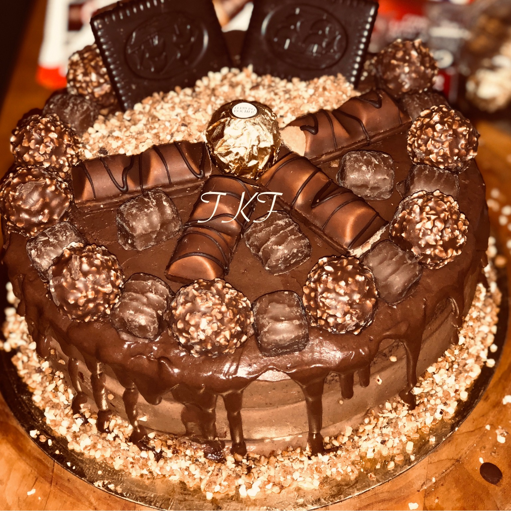

A propos

Je suis étudiante , actuellement inscrite en bachelor 1 Ynov informatique à Nantes Ynov Campus.
Je désire poursuivre mes études dans un cycle bachelor , dans le but d’obtenir un mastère en ingénierie de la
sécurité informatique.
Ayant la volonté d’apprendre et
la passion de l’informatique j'aime travailler en équipe
et apprendre de nouvelles choses.
Je souhaite travailler à mes heures libres , afin d’acquérir une nouvelle expérience dans le milieu du travail.
J’ai déjà eu à travailler dans le passé ce qui ma permis d’acquérir des compétences , notamment
dans le milieu de la restauration et la vente.
De plus, je suis déterminée à réussir toutes les tâches qui me seront confiées et veiller au bon déroulement de la mission .
Ashley Witney KONATE
25 RUE DU BOIS JOLI
44 200 Nantes,France
+33 7 68 10 76 31
witneykonate@gmail.com
Portfolio
Formations
Nantes Ynov Campus
Formation : bachelor 1 Ynov informatique à Nantes Ynov Campus - Septembre 2018 -Juillet 2019
Goethe Institut (OUAGADOUGOU)
CERTIFICAT A1 d'apprentissaage de la langue allemande - Novembre 2017 - Decembre 2017
Collège Horizon International (OUAGADOUGOU)
BACCALAUREAT scientifique (Mathématiques et sciences naturelles) - Septembre 2016-juillet 2017
Expérience professionnelle
WERTERN UNION (BURKINA FASO) : -Juin 2018
Western Union est un spécialiste du transfert d'argent de particulier à particulier.
Moyennant une commission, vous pouvez envoyer de l'argent à vos proches partout dans le monde.
J'ai fais un stage à Wertern Union au cours duquel, je m'occupais des tranfères d'argent.
Compétenses Informatique
Java script
Python
Langage C
HTML & CSS
Connaissance linguistique
Français : Langue maternelle
Anglais : Assez bien
Allemand : Assez bien
Centre d'interets
Musique
Cinéma
Fitness
Veille Informatique

Projets
Projet Y Days
Nantes Ynov Campus
Objectif : Dans le cadre de ma formation au sein d'Ynov Campus ,
je participe à un travail en équipe pour le développement d'un site web dans l'immobilier - Octobre 2018 -Juillet 2019
Projet Workshop
Nantes Ynov Campus : Janvier 2019 -Fevrier 2019
Dans le cadre de ma formation au sein d'Ynov Campus ,
j'ai participé à un travail d'équipe pour répondre aux problématiques (sur l'E-sport par exemple)
posées par l'annonceur (ATOS) .
Projet Connected flowers
Nantes Ynov Campus : Janvier 2019 -Juin 2019
Dans le cadre de ma formation au sein d'Ynov Campus ,
je participe à un travail d'équipe dans le but de créer un logiciel
qui permettra de à qui le veut , de planter une plante.
Ce logiciel accompagnera l'utilisateur dans l'entretient de cette plante.